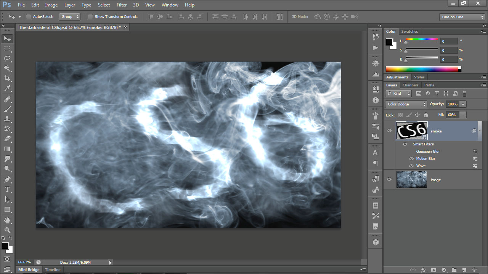
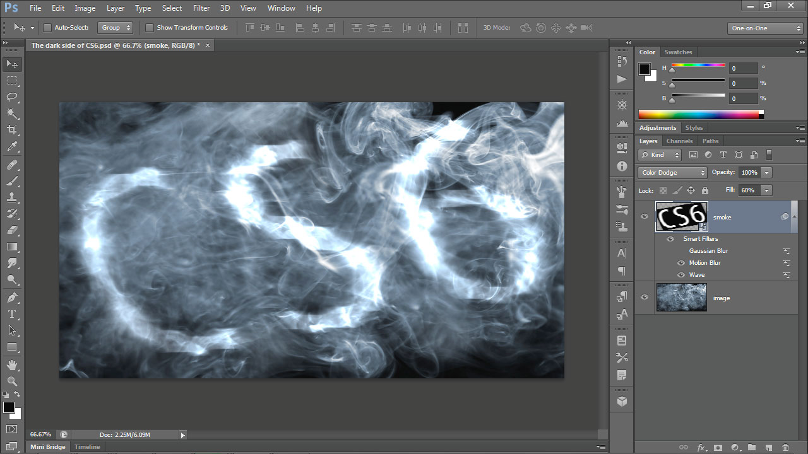

My Tools
Design Softwares:
 

Adobe Photoshop
A powerful art software. It's easy to feel overwhelmed with how many tools Photoshop provides. I mainly use photoshop for visual effects and to mess around with hues and contrast of my art pieces. I mainly use photoshop to manipulate and edit photos and scans of my artwork.
Paint Tool Sai
This software is not well known as Photoshop. I prefer to use Paint Tool Sai over Photoshop as Sai makes it a lot easier for the user to start drawing on the digital canvas. It has fewer tools and visual effects as Photoshop, however, Sai is a lot simpler and has a user interface that's easy to learn. I use sai to draw and color in my digital art pieces.
Autodesk Maya
Maya is a well-known software for artists who want to create 3D objects and animate them. This is precisely the reason why I use Maya. I enjoy taking a simple polygon and turning it into something that is much more complex. I think texturing each 3D models is the least exciting part of my project.
Unity
Unity allows the user to import 2D or 3D assets and add code to them in a scene. I have a a bit of experience adding code to my assets for certain actions to happen when specific conditions are met.
Coding Softwares:

Processing 3
This software allows for users to code within "the context of visual arts and visual literacy within technology". I like to code in Processing much more than Visual Studios. It provides artist, like me, a better understanding what of is going on in the code through visual effects.
Microsoft Visual Studio
This is the sofware that I learned to code C#. All my games were coded as a console application. Some of my games were coded in MonoGame which is an extention to Visual Studio.